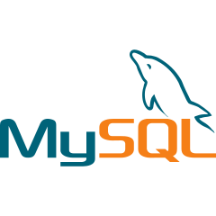
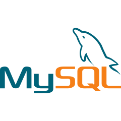

Skills
My coding journey began with the foundational elements of web development—HTML, CSS, JavaScript and Python through exploration and self-learning which layed the groundwork for my transition into software development.
Completing the Just IT Software Development Bootcamp was an enriching experience that provided me with a comprehensive understanding of key technologies and methodologies essential for launching a successful career in software development. The program, aligned with Level 3 qualification standards, offered practical hands-on experience in industry-standard programming languages and essential concepts, including:
HTML, JavaScript, CSS, Database Design, Python.
In addition to these core components, I further upskilled in:
Database Management: MySQL and Python's SQLite, Web Frameworks: Deployment with Flask, Version Control: Git and GitHub.
This immersive experience not only expanded my technical knowledge but also equipped me with practical, hands-on skills essential for real-world projects.
Dedicated to continuous learning, I stay updated with the latest trends and technologies through platforms like Codecademy and industry podcasts. Additionally, I follow influential figures in the software development community on YouTube and Instagram, enriching my knowledge and staying inspired by their insights and expertise.
Fun Fact: During the Consolidation week of the bootcamp, I inadvertently deleted all my project files while working with Git. It was a challenging moment that required working around the clock to recover the projects. However, I successfully overcame the setback and emerged with valuable lessons in resilience and problem-solving. 🔥


 
